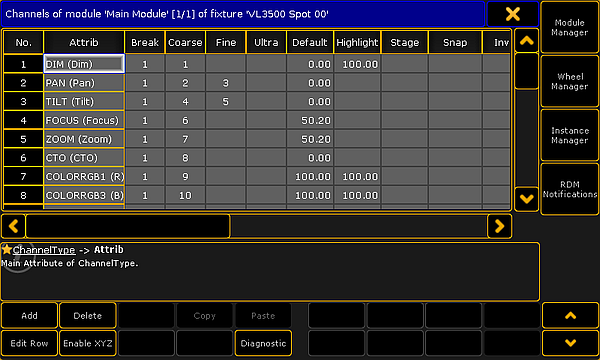
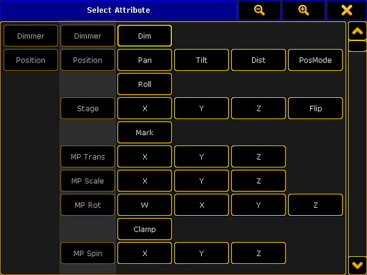
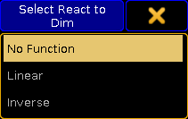
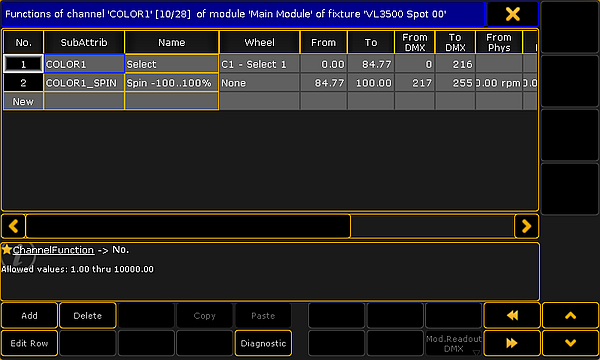
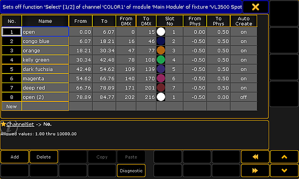
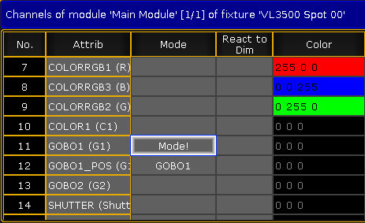
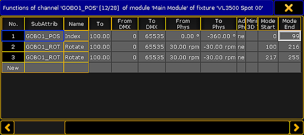

A fixture type, or the structure of how a fixture is described, is divided into different sections. This makes it possible to have quite advanced fixtures and still be able to control all aspects of the fixture.
A fixture has at least one Module and one Instance of this module. There might be several instances of the same module, for example a LED bar with four instances of the same RGB LED module build into one fixture. This will create four sub-fixtures.
There might be different modules in the same fixture, for instance a LED moving head might have a "main" module with pan/tilt, zoom, master intensity, and then several RGB modules for different sections of the head.
The modules contains a list of different Attributes that are mapped to DMX channels. The modules are added and defined in the Module Manager. The module amount and possible physical relationship between the modules is defined in the Instance Manager.
Inside a module there might be different Wheels. A wheel can be color wheels, gobo wheels, animation wheels, or other types of wheels. A color scroller is also often defined as a wheel even though it technically is a roll. All the wheels are defined in the Wheel Manager.
Fixtures can be build or modified in the grandMA2 software. It is possible to import downloaded fixture types. Please read the Adding fixtures to the show topic for information about this.
Everything about the fixture types are done in the Fixture Types Editor. Open it by pressing Setup then tap Patch & Fixture Schedule followed by taping the Fixture Types button on the top right corner.
This is a list of the fixtures in the show file. Tapping a fixture in the list and then the Edit button in the lower left corner will open the editor. It could look like this:

Module view in the fixture type editor
Here is a view of the first module of the fixture. There are four buttons on the right side of this editor. The top three open the three managers mentioned above. The bottom button on the right side opens the RDM Notification - Read about RDM and creating notifications in the Configure RDM Notifications topic.
There are some buttons at the bottom of the editor. There are buttons to Add and Delete rows in the different sections in the editor. Edit Row opens the editor for the selected row, it goes "into" the row. Read below for more information about this. The Enable XYZ and Disable XYZ is used to control if the fixture can use XYZ programming. Diagnostic opens a pop-up that shows errors or warnings for the selected element. In the lower right corner there can be up to four different arrow buttons. Up and Down arrows will move up and down in the rows. Left and Right arrows will change between different elements. The elements can be modules or when editing a row it can change between different row in the upper level (read more below).
Grayed out buttons do not have any functions.
Edit Module
The title bar in the Fixture Type Editor shows what is being displayed in the editor. In the picture above it is displaying the Channels of the module called "Main Module" of the fixture called "VL3500 Spot 00". Here the word "channel" is used as DMX channels and the list is actually the different Attributes in the module.
There are several columns in this part of the editor. This is a short description of them:
No.:
This is a number for the row. Each attribute has its own row. This number cannot be edited
Attrib:
This is the attribute. Editing this opens the Select Attribute pop-up.

Select an attribute for the module
This is a long list of all the existing attributes in the show. The list can be edited in the Attribute & Encoder Grouping.
Break:
Breaks are used if a fixture needs more than one start address.
This could be a LED bar with four individually LED instances build in one fixture. Each instance can be address on the back of the fixture, thus there need to be four different DMX start addresses for the fixture. This would be four different DMX breaks.
Another example is when a scroller is added to an existing conventional fixture and the fixture is connected to a dimmer - patched in one universe - and the scroller is connected to a PSU - patched in another universe but it is to be treated as one combined fixture.
A fixture can have up to 8 different breaks.
Coarse:
This is the 8-bit DMX number. This number describes the DMX address offset for the attribute. "1" is the same as the start patch address.
Fine:
This is the 16-bit DMX number - the attribute uses two DMX channels.
Ultra:
This is the 24-bit DMX number - the attribute uses three DMX channels.
Default:
This is the default value for the attribute. This value is used when the attribute does not get a value from anything else.
Highlight:
This value is used when the Highlight function is activated.
Stage:
This value is used, if the "Output Stage Value" function is activated in the Calibrate menu. This could be values that makes the fixtures open in full output in open white and with a narrow beam.
Snap:
Snap can be turned On. If it is then the attribute will not fade between values - it will jump directly to the new value. When this jump is performed is controlled by the Snap Percent value in the cues (Sequence Executor Sheet).
Invert:
Invert can be turned On. When it is On it will invert the DMX output for the channel.
React to Master:
For dimmer attributes this function is always On. Other attributes can have this On as well. It will make the value of the attribute react to the value of the Grand Master.
MIB disable:
MIB disable can be turned On. It makes the attribute ignore the move in black feature.
MIB Fade:
This time is used when this attribute is changing values by the move in black feature. The "Default" value means that it will use the time specified in the Setup -> Show -> Playback MIB Timing.
Profile:
DMX profiles can be added to an attribute. Editing this opens the Select DMX Profile pop that will list all the existing profiles. Profiles can be added or edited in the Graph Editor - read about it in the DMX Profiles section.
Mode:
This indicates if the attribute is depended of a different attribute. Read more about Mode channels below.
React to DIM:
This can be turned On. It makes the attribute react to the dimmer value. Editing this opens the Select React to Dim pop-up.

Select a mode for React to Dim
There are three options: No Function (default), Linear (follows the dimmer value), and Inverse (is the inverted value of the dimmer).
Color:
This is used to visualize colors and light output in the stage window and the MA 3D. It defines the color for LEDs. It can only be edited for color attributes.
Minimum DMX time:
Setting a time here defines the minimum time an attribute will use to change value. This can be useful for scrollers or moving head where fast movement is undesirable.
Trigger:
This can be turned On. It completely changes the function of the attribute. It will make the value count up each time a cue is triggered in a sequence. This function can be used by some media servers to detect a cue change.
Editing one of the row will move "into" the channel and the editor changes to match. Keep reading for details on the editor for channels.
Edit channel/row
Each row in the module is an Attribute. This is also called a Channel in the editor.
There is automatically a subattribute defined for most attributes. Often it is only one with the entire DMX range for the attribute.
Some attributes can have several subattributes. For instance a color wheel attribute might have different functions depending on the DMX value (as shown in the image below). Other examples could be a Pan attribute that have a position index function in one part of the DMX range and a continuous rotation speed in the rest of the DMX range.

Edit channels of modules
No.:
This is an internal row number. It cannot be changed.
SubAttrib:
Here the subattribute is defined. Editing this cell will open a pop-up much like the Select Attribute shown above, but instead it is Select Subattribute. Subattributes are defined in the Attribute & Encoder Grouping.
Name:
This is the name that will be displayed as a tap in the calculator pop-up when editing the value of the attribute.
Wheel:
Here it is possible to attach a wheel to the subattribute. Editing this cell will open the Select Wheel pop-up that lists the different defined wheels. Wheels can be defined in the Wheel Manager.
From:
This value is being shown on the encoders if the sheet readout is "Natural". This is the first or lowest values. This is often "0" or the minimum value for the attribute. It can make sense to defined this values as a negative values for pan and tilt attributes - often half of the complete rotation for instance "-270".
To:
This value is being shown on the encoders if the sheet readout is "Natural". This is the last or highest values. This is often "100" or the maximum value for the attribute. It can make sense to defined this values as a positive degree value for pan and tilt attributes - often half of the complete rotation for instance "270".
From DMX:
This is the lowest DMX value for the subattribute.
To DMX:
This is the highest DMX value for the subattribute.
From Phys:
This is the minimum physical value. It could be the minimum rotation speed (rpm), strobe frequency (Hz), pan value (degree), or the lowest intensity value. The default here is 0.00*. For some attributes the values is multiplied with a different value. For instance the intensity. The maximum intensity is defined in the Module Manager. This means that the "0" value is multiplied by the intensity value and the result is also "0" equal to no output.
This is used by MA 3D and is displayed in sheets if the readout is "Physical".
To Phys:
This is the maximum physical value. It could be the maximum rotation speed (rpm), strobe frequency (Hz), or pan value (degree). The default here is 1.00*. For some attributes the values is multiplied with a different value. For instance the intensity. The maximum intensity is defined in the Module Manager. This means that the "1" value is multiplied by the intensity value and the result is also maximum value equal to full output.
This is used by MA 3D and is displayed in sheets if the readout is "Physical".
Additional Phys:
This is used to define additional physical values. This is used by prisms. Here the number of facets can be defined. This is used by MA 3D.
Minimum 3D Time:
This is the fastest time used to travel from start to end of the range. It is only used in MA 3D.
Mode Start:
This column is only visible if the attribute has a defined mode channel. Read more about the Mode channels below. This defines the first DMX value of the mode range.
Mode End:
This column is only visible if the attribute has a defined mode channel. Read more about the Mode channels below. This defines the last DMX value of the mode range.
Each of the rows here can be edited to add Channel Sets.
Channel Sets for a subattribute
Channel Sets are specific DMX values or ranges of values that has a name.
The channel sets are the basis for information when auto creating presets. The channel sets are shortcuts to easy access to the values. The names are displayed in Fixture Sheets, Channel Sheets, and other places where the attribute values is displayed. The channel sets are also displayed and selectable in the Smart Window.
When a row is edited in the Channel Editor, it changes to edit the channel sets. It would look like this:

Editing Channel Sets
Each row here is a channel set whit a defined values range. The columns have changed a little. This is a short description:
No.:
This is again an auto created number for the row. It cannot be edited.
Name:
This is the name of the channel set. It will be displayed where the values are displayed and in the Smart window. It is customary that all the names are unique. This is to avoid confusion.
From:
This number is linked with the range set for the channel and the value typed in the From DMX. It is the minimum range value for the channel set. A value can be typed here but often it is easier to type the DMX values.
To:
This number is linked with the range set for the channel and the value typed in the To DMX. It is the maximum range value for the channel set. A value can be typed here but often it is easier to type the DMX values.
From DMX:
This is the first (lowest) DMX value of the channel set. It can be the same number in the To DMX, then it only this specific value that represents the channel set. This is relevant for many sets like the minimum value for an attribute.
To DMX:
This is the last (highest) DMX value of the channel set. It can be the same number in the From DMX, then it only this specific value that represents the channel set. This is relevant for many sets like the maximum value for an attribute.
Slot No:
If the subattribute has a wheel attached, then the slot number in the wheel can be typed here. Read more about wheels in the Wheel Manager.
From Phys:
For some attributes it makes sense to also add physical values. It can be the a specific strobe frequency, a revolution value, or as the example above a way to set a rotation range for a wheel. This is the lowest physical value.
To Phys:
This is the highest physical value.
Auto Create:
This can be On or Off. If it is On then this channel set will be used when presets are auto created. In the image above the second "open" is turned Off. This means that there will only be one "open" color preset for this color wheel.
The rows in channel sets cannot be edited.
Details about Mode channels
Some attributes change function based on the value of a different attribute. The attribute that controls the other attributes is called the Mode Channel.
Examples could be an attribute that control the rotation mode of a gobo. Imagine a fixture that has an attribute that is used to select a gobo on a gobo wheel. First half of the DMX range will select the different gobos on the wheel, but the gobos are in an "index" mode. A second attribute controls the rotation of the gobo. When the selected gobo is in index mode the rotation is set to be a degree number. The second half of the selection attribute also selects all the gobos on the wheel, but now in a continuous rotation mode. Now the rotation attribute will control the rotation speed and direction.
A real example of this is the VL3500 Spot from Vari-Lite. This is the settings in the "Main Modul" in the Fixture Type Editor.
Notice that the GOBO1 attribute is the mode channel for the GOBO1_POS attribute. The mode setting is changed in the GOBO1_POS attribute. Editing the mode cell opens a pop-up called Select Mode Channel.

Mode channel on a Gobo wheel
When the GOBO1_POS attribute is edited, it is possible to set Mode Start and Mode End values. This will make the subattribute row active if the mode channel is in the set range. In the example below each of the three rows cover a range of the mode channel. If there where no mode ranges then these rows would cause errors because the DMX ranges are the same for each row. But since they are in different mode range then it is not an error.

Mode range set in Gobo Position attribute
In the VL3500 there are three line because the first is the index mode, the second is the rotation of the gobos, the last is the continuous rotation of the gobo wheel.
Virtual Attributes
Virtual attributes can be added to a fixture by adding the attribute as normal but without giving the attribute any DMX numbers in the Coarse, Fine, or Ultra column in the Module editor.
Virtual attributes are often dimmer attributes that acts as virtual master intensity control in fixtures that do not have this attribute build in. It could be a LED fixture that only has Red, Green, and Blue attributes. LED fixtures like this fades the MixColor attributes (RGB) with cross fades. Most programmers prefer that the fixtures have the extra (virtual) intensity control.